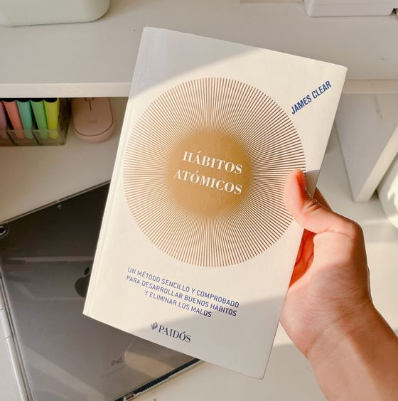

SUPERACIÓN PERSONAL
Los libros de superación personal están diseñados para inspirar y guiar a las personas en su camino hacia el crecimiento personal, el éxito, y la realización.
Art by Donovan Bake
__...--~~~~~-._ _.-~~~~~--...__
// `V' \\
// | \\
//__...--~~~~~~-._ | _.-~~~~~~--...__\\
//__.....----~~~~._\ | /_.~~~~----.....__\\
====================\\|//====================
Los mas populares actualmente
Para impulsar tu crecimiento personal y alcanzar tus metas, aquí tienes una selección de los libros de superación personal más influyentes del momento. Sumérgete en sus páginas y descubre estrategias prácticas, consejos inspiradores y herramientas valiosas para transformar tu vida. .
Hábitos Atómicos
♥ James Clear
"Demuestra que cualquier meta está al alcance de la mano, siempre y cuando empecemos desde lo más simple." ABC Bienestar
SIPNOSIS:
A menudo pensamos que para cambiar de vida tenemos que pensar en hacer cambios grandes. Nada más lejos de la realidad. Según el reconocido experto en hábitos James Clear, el cambio real proviene del resultado de cientos de pequeñas decisiones: hacer dos flexiones al día, levantarse cinco minutos antes o hacer una corta llamada telefónica.Clear llama a estas decisiones “hábitos atómicos”: tan pequeños como una partícula, pero tan poderosos como un tsunami. En este libro innovador nos revela exactamente cómo esos cambios minúsculos pueden crecer hasta llegar a cambiar nuestra carrera profesional, nuestras relaciones y todos los aspectos de nuestra vida.
Comprar el libro aquí